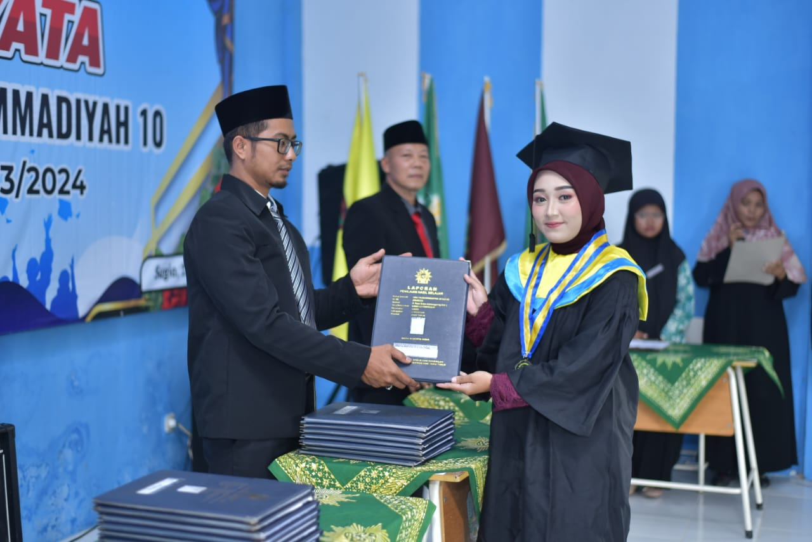

Saya adalah mahasiswa aktif Teknik Informatika PENS PSDKU Lamongan yang memiliki minat besar pada pengembangan web dan perancangan aplikasi yang user-friendly. Terbiasa bekerja dengan HTML, CSS, serta alat pendukung pengembangan front-end lainnya, dan aktif mengembangkan diri melalui berbagai proyek akademik. Saya merupakan pribadi yang optimis, senang mengeksplorasi hal baru, serta mampu berkolaborasi secara efektif dalam tim untuk menyelesaikan tugas dengan teliti dan tepat waktu.
Perjalanan pendidikan saya dari SD hingga perkuliahan
Fokus Studi : Dasar-Dasar Akademik & Pembentukan Karakter. Masa pengenalan dunia pendidikan formal untuk membangun fondasi akademik yang kuat serta menanamkan nilai-nilai disiplin, tanggung jawab, dan rasa ingin tahu sejak dini.
Fokus Studi : Pengembangan Pengetahuan Umum & Logika Dasar. Memperluas wawasan di berbagai bidang keilmuan serta mengasah kemampuan berpikir logis dan analitis sebagai bekal melanjutkan ke jenjang yang lebih tinggi.
Fokus Studi : Sains & Teknologi Dasar. Mendalami ilmu pengetahuan alam dan matematika serta mulai mengenal dasar-dasar teknologi informasi, yang menjadi fondasi awal ketertarikan terhadap dunia pemrograman dan pengembangan perangkat lunak.
Fokus Studi : Pengembangan Web Frontend & UI/UX Design. Mendalami proses pembuatan website mulai dari tahap awal hingga implementasi. Merancang tampilan antarmuka (UI/UX) yang responsif, interaktif, dan mudah digunakan oleh user. Merealisasikan hasil desain ke dalam baris kode frontend menggunakan HTML, CSS, JavaScript, serta framework pendukung untuk memastikan performa website berjalan optimal dan fungsional.
Pengalaman organisasi, kepemimpinan, dan pengembangan teknis
Memiliki rekam jejak kepemimpinan yang kuat sejak aktif di Ikatan Pelajar Muhammadiyah (IPM) dengan mengemban amanah sebagai Ketua Bidang serta dipercaya menjadi Ketua Pelaksana yang bertanggung jawab penuh atas manajemen tim, perencanaan strategis, dan eksekusi program kerja. Pengalaman kepemimpinan ini diperluas di jenjang perkuliahan melalui partisipasi aktif dalam ekosistem kaderisasi LKMM Pra-TD dan TD, hingga berhasil menyelesaikan pelatihan pemandu dan dipercaya menjadi Pemandu serta Pemateri resmi forum kampus. Seluruh rangkaian pengalaman ini mengasah keahlian mendalam dalam manajemen proyek, public speaking, komunikasi strategis, serta kepemimpinan organisasi.
Aktif mengikuti berbagai pelatihan intensif dan workshop untuk memperdalam keahlian di bidang teknologi informasi. Terlibat dalam kegiatan seperti Workshop Mobile Programming PENSLA dan Workshop Front-End & Back-End Technology. Melalui rangkaian pelatihan ini, saya fokus mengasah kemampuan praktis dalam merancang UI/UX yang user-friendly serta mengimplementasikan baris kode frontend menggunakan HTML, CSS, dan JavaScript untuk membangun website yang responsif.
Menjalani magang selama 5,5 bulan di Dinas Perpustakaan dan Kearsipan Kota Surabaya, terlibat langsung dalam pengelolaan layanan perpustakaan berbasis teknologi informasi. Berkontribusi dalam pengelolaan data koleksi perpustakaan, pendampingan layanan digital kepada pengunjung, serta membantu proses administrasi dan kearsipan secara sistematis. Pengalaman ini mengasah kemampuan komunikasi profesional, pelayanan publik, serta kedisiplinan dan tanggung jawab dalam lingkungan kerja instansi pemerintah.
Keahlian yang telah saya pelajari dan kembangkan
Pelatihan dan pengembangan diri yang telah saya ikuti
Aktivitas yang saya nikmati di waktu luang
Beberapa proyek yang telah saya buat
Alat analisis forensik citra digital untuk mendeteksi keaslian foto. Bertanggung jawab penuh dalam UI/UX Design dan Frontend Development—merancang antarmuka yang bersih dan intuitif agar data forensik yang kompleks mudah dipahami. Direalisasikan menggunakan HTML, CSS, dan JavaScript, memastikan tampilan responsif, interaktif, dan performa optimal saat menyajikan visualisasi data serta hasil analisis secara real-time dari unggah dokumen hingga deteksi akhir.
Website portofolio personal resmi yang dirancang dan dibangun dari awal untuk menampilkan profil, skill, dan karya secara digital. Berperan sebagai UI/UX Designer sekaligus Frontend Developer, fokus menciptakan tampilan minimalis, modern, dan mudah dinavigasi, lalu diimplementasikan dengan HTML, CSS, dan JavaScript agar responsif di berbagai perangkat.
Aplikasi mobile inovatif berbasis AI untuk merangkum berbagai dokumen atau teks panjang secara otomatis dan akurat dalam hitungan detik. Berperan sebagai UI/UX Designer yang merancang alur antarmuka sederhana namun fungsional, memastikan proses pengunggahan hingga penyajian hasil rangkuman terasa intuitif, dengan fokus pada efisiensi navigasi serta tampilan visual yang modern dan bersih.
Dashboard manajemen data kesehatan bayi dan balita. Fitur utama mencakup manajemen data imunisasi, pendaftaran bayi, dan integrasi data sensor melalui API untuk pemantauan parameter kesehatan secara real-time. Keamanan data dijamin dengan hashing password dan manajemen sesi yang ketat.
Perancangan aplikasi mobile mentorship untuk pendidikan remaja. Menerapkan 10 Usability Heuristics dan prinsip desain psikologi untuk menciptakan alur kerja aplikasi yang memudahkan interaksi antara mentor dan pelajar secara efektif dan menyenangkan.
Platform berbasis web sebagai pusat informasi pariwisata, kebudayaan, dan kuliner khas Kabupaten Tuban. Berfokus pada implementasi fundamental web development yang responsif untuk mengenalkan potensi daerah secara digital. Meliputi eksplorasi visual destinasi alam (Air Terjun Nglirip, Goa Akbar, Pantai Boom), katalog kuliner & UMKM khas Bumi Wali (Becek Mentok, Kare Rajungan, Legen), serta integrasi informasi sejarah Wali Songo, situs Makam Sunan Bonang, dan arsitektur Masjid Agung Tuban.
If you have any project in your mind
081515683419
diafatmaelsalady@gmail.com
github.com/Elsalady
@elsalady_df